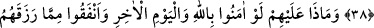

ALLÂH’IN SEVMEDİĞİ KİMSELER
36- Allah’a ibâdet edin ve O’na hiçbir şeyi ortak koşmayın. Ana babaya,
akrabâya, yetimlere, yoksullara, yakın komşuya, uzak komşuya, yakın arkadaşa,
yolcuya, ellerinizin altında bulunanlara (köle, cariye, hizmetçi ve benzerlerine) iyi
davranın; Allah kendini beğenen ve dâimâ böbürlenip duran kimseyi sevmez.
37- Bunlar cimrilik eden ve insanlara da cimriliği tavsiye eden, Allah’ın
kendilerine lütfundan verdiğini gizleyen kimselerdir. Biz, kâfirler için alçaltıcı bir
azap hazırladık.
38- Allah’a ve âhiret gününe inanmadıkları halde mallarını, insanlara gösteriş için
sarfedenler de (âhirette azaba dûçâr olurlar). Şeytan bir kimseye arkadaş olursa,
ne kötü bir arkadaştır o!
39- Allah’a ve âhiret gününe îman edip de Allah’ın kendilerine verdiğinden
(O’nun yolunda) harcasalardı ne olurdu sanki! Allah onların durumunu hakkıyle
bilmektedir.
40- Şüphe yok ki Allah zerre kadar haksızlık etmez. (Kulun yaptığı iş, eğer bir
kötülük ise, onun cezâsını adaletle verir.) İyilik olursa onu katlar (kat kat artırır),
kendinden de büyük mükâfat verir.